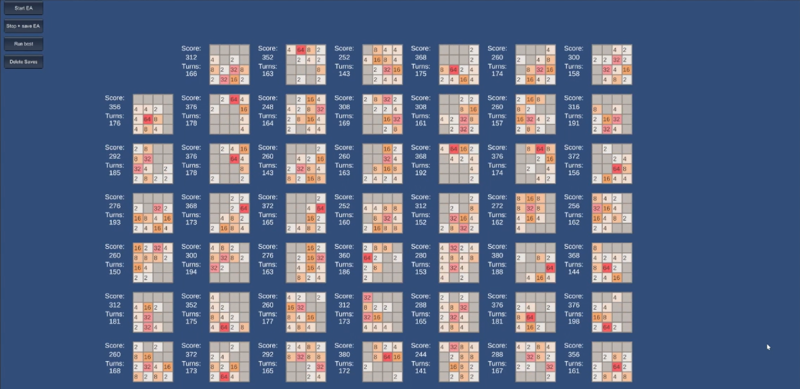

2048

The final for my Foundations of AI class: This is both a rebuild of the game 2048, as well as a build of an AI model to try and play it for as long as they can.
The AI build used 55 instances of the game, their results feeding into a NEAT algorithm (NeuroEvolution of Augmenting Topologies)